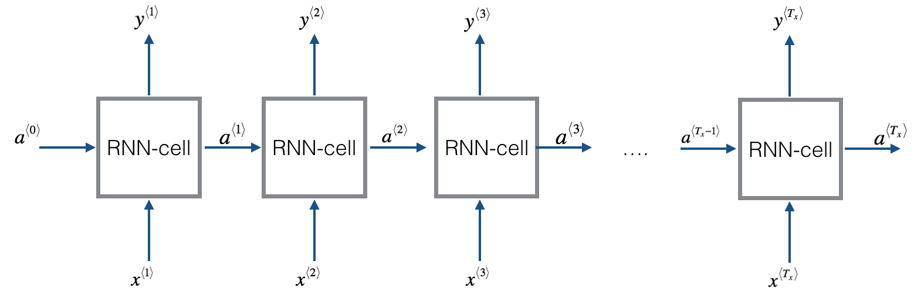
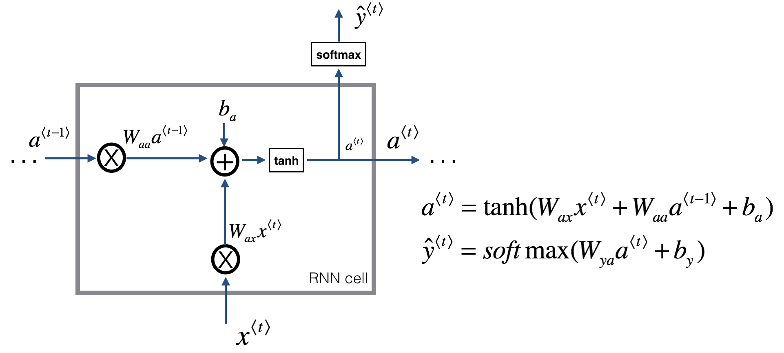
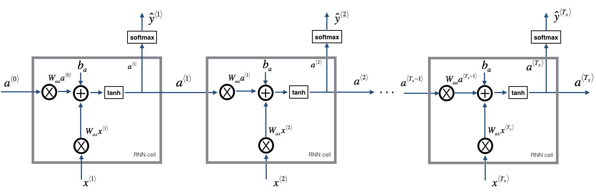
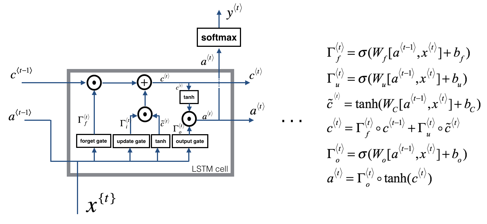
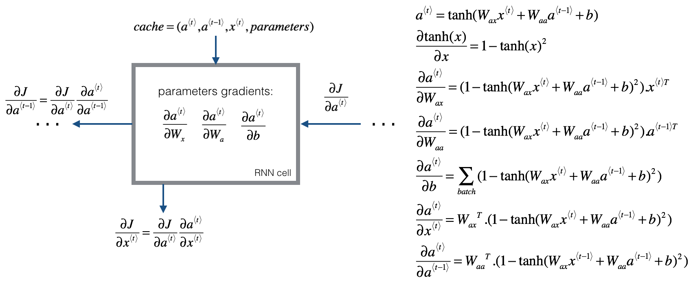

Building your Recurrent Neural Network - Step by Step
Welcome to Course 5’s first assignment! In this assignment, you will implement your first Recurrent Neural Network in numpy.
Recurrent Neural Networks (RNN) are very effective for Natural Language Processing and other sequence tasks because they have “memory”. They can read inputs $x^{\langle t \rangle}$ (such as words) one at a time, and remember some information/context through the hidden layer activations that get passed from one time-step to the next. This allows a uni-directional RNN to take information from the past to process later inputs. A bidirection RNN can take context from both the past and the future.
Notation:
Superscript $[l]$ denotes an object associated with the $l^{th}$ layer.
- Example: $a^{[4]}$ is the $4^{th}$ layer activation. $W^{[5]}$ and $b^{[5]}$ are the $5^{th}$ layer parameters.
Superscript $(i)$ denotes an object associated with the $i^{th}$ example.
- Example: $x^{(i)}$ is the $i^{th}$ training example input.
Superscript $\langle t \rangle$ denotes an object at the $t^{th}$ time-step.
- Example: $x^{\langle t \rangle}$ is the input x at the $t^{th}$ time-step. $x^{(i)\langle t \rangle}$ is the input at the $t^{th}$ timestep of example $i$.
Lowerscript $i$ denotes the $i^{th}$ entry of a vector.
- Example: $a^{[l]}_i$ denotes the $i^{th}$ entry of the activations in layer $l$.
We assume that you are already familiar with numpy and/or have completed the previous courses of the specialization. Let’s get started!
Let’s first import all the packages that you will need during this assignment.
1 | import numpy as np |
1 - Forward propagation for the basic Recurrent Neural Network
Later this week, you will generate music using an RNN. The basic RNN that you will implement has the structure below. In this example, $T_x = T_y$.

Here’s how you can implement an RNN:
Steps:
- Implement the calculations needed for one time-step of the RNN.
- Implement a loop over $T_x$ time-steps in order to process all the inputs, one at a time.
Let’s go!
1.1 - RNN cell
A Recurrent neural network can be seen as the repetition of a single cell. You are first going to implement the computations for a single time-step. The following figure describes the operations for a single time-step of an RNN cell.

Exercise: Implement the RNN-cell described in Figure (2).
Instructions:
- Compute the hidden state with tanh activation: $a^{\langle t \rangle} = \tanh(W_{aa} a^{\langle t-1 \rangle} + W_{ax} x^{\langle t \rangle} + b_a)$.
- Using your new hidden state $a^{\langle t \rangle}$, compute the prediction $\hat{y}^{\langle t \rangle} = softmax(W_{ya} a^{\langle t \rangle} + b_y)$. We provided you a function:
softmax. - Store $(a^{\langle t \rangle}, a^{\langle t-1 \rangle}, x^{\langle t \rangle}, parameters)$ in cache
- Return $a^{\langle t \rangle}$ , $y^{\langle t \rangle}$ and cache
We will vectorize over $m$ examples. Thus, $x^{\langle t \rangle}$ will have dimension $(n_x,m)$, and $a^{\langle t \rangle}$ will have dimension $(n_a,m)$.
1 | # GRADED FUNCTION: rnn_cell_forward |
1 | np.random.seed(1) |
a_next[4] = [ 0.59584544 0.18141802 0.61311866 0.99808218 0.85016201 0.99980978
-0.18887155 0.99815551 0.6531151 0.82872037]
a_next.shape = (5, 10)
yt_pred[1] = [ 0.0111839 0.98317979 0.78859101 0.63182533 0.01011613 0.11054788
0.63079776 0.0033688 0.0017441 0.82253474]
yt_pred.shape = (2, 10)
1.2 - RNN forward pass
You can see an RNN as the repetition of the cell you’ve just built. If your input sequence of data is carried over 10 time steps, then you will copy the RNN cell 10 times. Each cell takes as input the hidden state from the previous cell ($a^{\langle t-1 \rangle}$) and the current time-step’s input data ($x^{\langle t \rangle}$). It outputs a hidden state ($a^{\langle t \rangle}$) and a prediction ($y^{\langle t \rangle}$) for this time-step.

Exercise: Code the forward propagation of the RNN described in Figure (3).
Instructions:
- Create a vector of zeros ($a$) that will store all the hidden states computed by the RNN.
- Initialize the “next” hidden state as $a_0$ (initial hidden state).
- Start looping over each time step, your incremental index is $t$ :
- Update the “next” hidden state and the cache by running
rnn_cell_forward - Store the “next” hidden state in $a$ ($t^{th}$ position)
- Store the prediction in y
- Add the cache to the list of caches
- Update the “next” hidden state and the cache by running
- Return $a$, $y$ and caches
1 | # GRADED FUNCTION: rnn_forward |
1 | np.random.seed(1) |
a[4][1] = [-0.99999375 0.77911235 -0.99861469 -0.99833267]
a.shape = (5, 10, 4)
y_pred[1][3] = [ 0.79560373 0.86224861 0.11118257 0.81515947]
y_pred.shape = (2, 10, 4)
caches[1][1][3] = [-1.1425182 -0.34934272 -0.20889423 0.58662319]
len(caches) = 2
Congratulations! You’ve successfully built the forward propagation of a recurrent neural network from scratch. This will work well enough for some applications, but it suffers from vanishing gradient problems. So it works best when each output $y^{\langle t \rangle}$ can be estimated using mainly “local” context (meaning information from inputs $x^{\langle t’ \rangle}$ where $t’$ is not too far from $t$).
In the next part, you will build a more complex LSTM model, which is better at addressing vanishing gradients. The LSTM will be better able to remember a piece of information and keep it saved for many timesteps.
2 - Long Short-Term Memory (LSTM) network
This following figure shows the operations of an LSTM-cell.

Similar to the RNN example above, you will start by implementing the LSTM cell for a single time-step. Then you can iteratively call it from inside a for-loop to have it process an input with $T_x$ time-steps.
About the gates
- Forget gate
For the sake of this illustration, lets assume we are reading words in a piece of text, and want use an LSTM to keep track of grammatical structures, such as whether the subject is singular or plural. If the subject changes from a singular word to a plural word, we need to find a way to get rid of our previously stored memory value of the singular/plural state. In an LSTM, the forget gate lets us do this:
Here, $W_f$ are weights that govern the forget gate’s behavior. We concatenate $[a^{\langle t-1 \rangle}, x^{\langle t \rangle}]$ and multiply by $W_f$. The equation above results in a vector $\Gamma_f^{\langle t \rangle}$ with values between 0 and 1. This forget gate vector will be multiplied element-wise by the previous cell state $c^{\langle t-1 \rangle}$. So if one of the values of $\Gamma_f^{\langle t \rangle}$ is 0 (or close to 0) then it means that the LSTM should remove that piece of information (e.g. the singular subject) in the corresponding component of $c^{\langle t-1 \rangle}$. If one of the values is 1, then it will keep the information.
- Update gate
Once we forget that the subject being discussed is singular, we need to find a way to update it to reflect that the new subject is now plural. Here is the formulat for the update gate:
Similar to the forget gate, here $\Gamma_u^{\langle t \rangle}$ is again a vector of values between 0 and 1. This will be multiplied element-wise with $\tilde{c}^{\langle t \rangle}$, in order to compute $c^{\langle t \rangle}$.
- Updating the cell
To update the new subject we need to create a new vector of numbers that we can add to our previous cell state. The equation we use is:
Finally, the new cell state is:
- Output gate
To decide which outputs we will use, we will use the following two formulas:
Where in equation 5 you decide what to output using a sigmoid function and in equation 6 you multiply that by the $\tanh$ of the previous state.
2.1 - LSTM cell
Exercise: Implement the LSTM cell described in the Figure (3).
Instructions:
- Concatenate $a^{\langle t-1 \rangle}$ and $x^{\langle t \rangle}$ in a single matrix: $concat = \begin{bmatrix} a^{\langle t-1 \rangle} \\ x^{\langle t \rangle} \end{bmatrix}$
- Compute all the formulas 1-6. You can use
sigmoid()(provided) andnp.tanh(). - Compute the prediction $y^{\langle t \rangle}$. You can use
softmax()(provided).
1 | # GRADED FUNCTION: lstm_cell_forward |
1 | np.random.seed(1) |
a_next[4] = [-0.66408471 0.0036921 0.02088357 0.22834167 -0.85575339 0.00138482
0.76566531 0.34631421 -0.00215674 0.43827275]
a_next.shape = (5, 10)
c_next[2] = [ 0.63267805 1.00570849 0.35504474 0.20690913 -1.64566718 0.11832942
0.76449811 -0.0981561 -0.74348425 -0.26810932]
c_next.shape = (5, 10)
yt[1] = [ 0.79913913 0.15986619 0.22412122 0.15606108 0.97057211 0.31146381
0.00943007 0.12666353 0.39380172 0.07828381]
yt.shape = (2, 10)
cache[1][3] = [-0.16263996 1.03729328 0.72938082 -0.54101719 0.02752074 -0.30821874
0.07651101 -1.03752894 1.41219977 -0.37647422]
len(cache) = 10
2.2 - Forward pass for LSTM
Now that you have implemented one step of an LSTM, you can now iterate this over this using a for-loop to process a sequence of $T_x$ inputs.

Exercise: Implement lstm_forward() to run an LSTM over $T_x$ time-steps.
Note: $c^{\langle 0 \rangle}$ is initialized with zeros.
1 | # GRADED FUNCTION: lstm_forward |
1 | np.random.seed(1) |
a[4][3][6] = 0.172117767533
a.shape = (5, 10, 7)
y[1][4][3] = 0.95087346185
y.shape = (2, 10, 7)
caches[1][1[1]] = [ 0.82797464 0.23009474 0.76201118 -0.22232814 -0.20075807 0.18656139
0.41005165]
c[1][2][1] -0.855544916718
len(caches) = 2
Congratulations! You have now implemented the forward passes for the basic RNN and the LSTM. When using a deep learning framework, implementing the forward pass is sufficient to build systems that achieve great performance.
The rest of this notebook is optional, and will not be graded.
3 - Backpropagation in recurrent neural networks (OPTIONAL / UNGRADED)
In modern deep learning frameworks, you only have to implement the forward pass, and the framework takes care of the backward pass, so most deep learning engineers do not need to bother with the details of the backward pass. If however you are an expert in calculus and want to see the details of backprop in RNNs, you can work through this optional portion of the notebook.
When in an earlier course you implemented a simple (fully connected) neural network, you used backpropagation to compute the derivatives with respect to the cost to update the parameters. Similarly, in recurrent neural networks you can to calculate the derivatives with respect to the cost in order to update the parameters. The backprop equations are quite complicated and we did not derive them in lecture. However, we will briefly present them below.
3.1 - Basic RNN backward pass
We will start by computing the backward pass for the basic RNN-cell.

Deriving the one step backward functions:
To compute the rnn_cell_backward you need to compute the following equations. It is a good exercise to derive them by hand.
The derivative of $\tanh$ is $1-\tanh(x)^2$. You can find the complete proof here. Note that: $ \text{sech}(x)^2 = 1 - \tanh(x)^2$
Similarly for $\frac{ \partial a^{\langle t \rangle} } {\partial W_{ax}}, \frac{ \partial a^{\langle t \rangle} } {\partial W_{aa}}, \frac{ \partial a^{\langle t \rangle} } {\partial b}$, the derivative of $\tanh(u)$ is $(1-\tanh(u)^2)du$.
The final two equations also follow same rule and are derived using the $\tanh$ derivative. Note that the arrangement is done in a way to get the same dimensions to match.
1 | def rnn_cell_backward(da_next, cache): |
1 | np.random.seed(1) |
Backward pass through the RNN
Computing the gradients of the cost with respect to $a^{\langle t \rangle}$ at every time-step $t$ is useful because it is what helps the gradient backpropagate to the previous RNN-cell. To do so, you need to iterate through all the time steps starting at the end, and at each step, you increment the overall $db_a$, $dW_{aa}$, $dW_{ax}$ and you store $dx$.
Instructions:
Implement the rnn_backward function. Initialize the return variables with zeros first and then loop through all the time steps while calling the rnn_cell_backward at each time timestep, update the other variables accordingly.
1 | def rnn_backward(da, caches): |
1 | np.random.seed(1) |
3.2 - LSTM backward pass
3.2.1 One Step backward
The LSTM backward pass is slighltly more complicated than the forward one. We have provided you with all the equations for the LSTM backward pass below. (If you enjoy calculus exercises feel free to try deriving these from scratch yourself.)
3.2.2 gate derivatives
3.2.3 parameter derivatives
To calculate $db_f, db_u, db_c, db_o$ you just need to sum across the horizontal (axis= 1) axis on $d\Gamma_f^{\langle t \rangle}, d\Gamma_u^{\langle t \rangle}, d\tilde c^{\langle t \rangle}, d\Gamma_o^{\langle t \rangle}$ respectively. Note that you should have the keep_dims = True option.
Finally, you will compute the derivative with respect to the previous hidden state, previous memory state, and input.
Here, the weights for equations 13 are the first n_a, (i.e. $W_f = W_f[:n_a,:]$ etc…)
where the weights for equation 15 are from n_a to the end, (i.e. $W_f = W_f[n_a:,:]$ etc…)
Exercise: Implement lstm_cell_backward by implementing equations $7-17$ below. Good luck! :)
1 | def lstm_cell_backward(da_next, dc_next, cache): |
1 | np.random.seed(1) |
3.3 Backward pass through the LSTM RNN
This part is very similar to the rnn_backward function you implemented above. You will first create variables of the same dimension as your return variables. You will then iterate over all the time steps starting from the end and call the one step function you implemented for LSTM at each iteration. You will then update the parameters by summing them individually. Finally return a dictionary with the new gradients.
Instructions: Implement the lstm_backward function. Create a for loop starting from $T_x$ and going backward. For each step call lstm_cell_backward and update the your old gradients by adding the new gradients to them. Note that dxt is not updated but is stored.
1 | def lstm_backward(da, caches): |
1 | np.random.seed(1) |
Congratulations !
Congratulations on completing this assignment. You now understand how recurrent neural networks work!
Lets go on to the next exercise, where you’ll use an RNN to build a character-level language model.